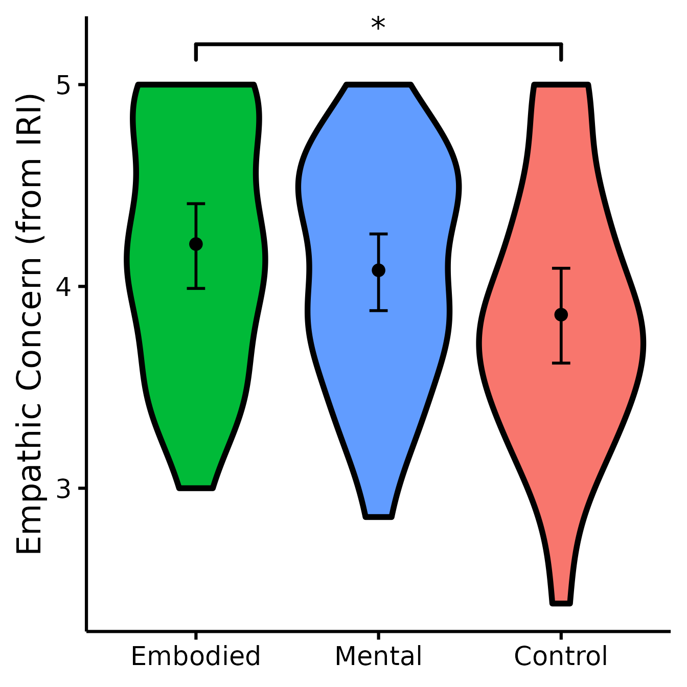

Planned Contrasts Analyses (Group Comparisons)
Rémi Thériault
July 25, 2021
Source:vignettes/contrasts.Rmd
contrasts.RmdBasic Idea
In this post, I will document how I conduct planned contrasts analyses to test whether experimental groups differ from each other. Planned contrasts are similar to t tests, but provide more power when you have several groups:
Statistical power is lower with the standard t test compared than it is with the planned contrast version for two reasons: a) the sample size is smaller with the t test, because only the cases in the two groups are selected; and b) in the planned contrast the error term is smaller than it is with the standard t test because it is based on all the cases (source)
I will first demonstrate a simple example for conducting the analysis, exporting the table of results to Microsoft Word, and producing the figure. After demonstrating it for a single variable, we will then look at a full workflow, i.e., how we can automatize the process for several variables simultaneously.
Getting started
For the minimal example, we will use the iris dataset, which is installed with R by default.
Using nice_contrasts()
Load the rempsyc package:
Note: If you haven’t installed this package yet, you will need to install it via the following command:
devtools::install_github("rempsyc/rempsyc"). Packagedevtoolsis necessary for this command. If you haven’t installeddevtoolsyet, install it viainstall.packages("devtools").
Let’s test out the function on existing data
table.stats <- nice_contrasts(response = "Sepal.Length",
group = "Species",
data = iris)
table.stats## Dependent Variable Comparison df t p
## 1 Sepal.Length setosa - virginica 147 -15.365506 2.214821e-32
## 2 Sepal.Length versicolor - virginica 147 -6.332686 2.765638e-09
## 3 Sepal.Length setosa - versicolor 147 -9.032819 8.770194e-16
## dR CI_lower CI_upper
## 1 -2.929466 -3.561811 -2.1911284
## 2 -1.205879 -1.667237 -0.6537229
## 3 -1.723587 -2.161604 -1.1922714This will give us the ‘robust’ version of Cohen’s d (i.e., robust to deviations from parametric assumptions). It will also provide us with bootstrapped 95% confidence intervals of that effect size.
Make it publication-ready using nice_table().
(my_table <- nice_table(table.stats))Dependent Variable |
Comparison |
df |
t |
p |
dR |
95% CI |
Sepal.Length |
setosa - virginica |
147 |
-15.37 |
< .001 |
-2.93 |
[-3.56, -2.19] |
Sepal.Length |
versicolor - virginica |
147 |
-6.33 |
< .001 |
-1.21 |
[-1.67, -0.65] |
Sepal.Length |
setosa - versicolor |
147 |
-9.03 |
< .001 |
-1.72 |
[-2.16, -1.19] |
Save the table to Word
save_as_docx(my_table, path = "contrasts.docx")Make a violin plot comparing groups through nice_violin().
(figure <- nice_violin(group = "Species",
response = "Sepal.Length",
data = iris,
ytitle = "Length of Sepal",
signif_annotation = c("***", "***", "***"),
signif_yposition = c(8.7, 7.3, 8.2),
signif_xmin = c("setosa", "setosa", "versicolor"),
signif_xmax = c("virginica", "versicolor", "virginica")))
Let’s save a high-resolution/vector version of this figure in PDF (it could be .png or any other format too if necessary).
ggplot2::ggsave('Figure 1.pdf', figure, width = 7, height = 7,
unit = 'in', dpi = 300)Congratulations for making it that far! You’ve done it! From A to Z, you now know how to make things work! If you would like to integrate this with a broader workflow, read on for the next part!
Full Workflow
For the full workflow, we will use the dataset from one of my studies published at the Quarterly Journal of Experimental Psychology and available on the Open Science Framework.
Load the data file from the Open Science Framework
data <- read.csv("https://osf.io/qkmnp//?action=download", header=TRUE)Specify the order of factor levels for “Group” (otherwise R will alphabetize them)
## [1] Embodied Embodied Control Control Mental Embodied Control Control
## [9] Control Embodied Mental Mental Control Control Mental Control
## [17] Mental Mental Embodied Embodied Control Embodied Mental Control
## [25] Embodied Embodied Mental Control Mental Embodied Embodied Mental
## [33] Mental Mental Embodied Mental Embodied Mental Control Embodied
## [41] Mental Mental Embodied Mental Mental Embodied Control Control
## [49] Control Mental Embodied Control Embodied Control Mental Embodied
## [57] Embodied Embodied Control Control Control Control Mental Control
## [65] Mental Embodied Embodied Mental Embodied Control Control Mental
## [73] Mental Control Control Embodied Mental Control Embodied Embodied
## [81] Embodied Mental Control Control Embodied Mental Mental Mental
## [89] Embodied Control
## Levels: Embodied Mental ControlDefine our dependent variables
## [1] "QCAEPR" "IRIPT" "IRIFS" "IRIEC" "IRIPD" "IOS"
table.stats <- nice_contrasts(response = DV,
group = "Group",
data = data)
table.stats## Dependent Variable Comparison df t p
## 1 QCAEPR Embodied - Control 87 2.19599050 3.075313e-02
## 2 QCAEPR Mental - Control 86 0.15139155 8.800214e-01
## 3 QCAEPR Embodied - Mental 86 2.13034255 3.599933e-02
## 4 IRIPT Embodied - Control 87 0.23740438 8.129013e-01
## 5 IRIPT Mental - Control 86 -1.38629687 1.692400e-01
## 6 IRIPT Embodied - Mental 86 0.85841114 3.930517e-01
## 7 IRIFS Embodied - Control 87 1.95858612 5.336471e-02
## 8 IRIFS Mental - Control 86 1.53639996 1.281114e-01
## 9 IRIFS Embodied - Mental 86 1.25380051 2.133121e-01
## 10 IRIEC Embodied - Control 86 0.12249596 9.027921e-01
## 11 IRIEC Mental - Control 86 2.30118373 2.379970e-02
## 12 IRIEC Embodied - Mental 87 4.70778837 9.385982e-06
## 13 IRIPD Embodied - Control 86 0.01932946 9.846231e-01
## 14 IRIPD Mental - Control 86 1.44763512 1.513548e-01
## 15 IRIPD Embodied - Mental 87 2.12312024 3.658408e-02
## 16 IOS Embodied - Control 86 0.10212396 9.188960e-01
## 17 IOS Mental - Control 86 0.83396371 4.066119e-01
## 18 IOS Embodied - Mental 87 2.58466812 1.141344e-02
## dR CI_lower CI_upper
## 1 0.52518512 -0.04689414 1.1411750
## 2 0.03643629 -0.50629868 0.5859274
## 3 0.48874884 -0.01774123 1.0413393
## 4 -0.06831227 -0.66452170 0.5096670
## 5 -0.17448179 -0.72256599 0.2746119
## 6 0.10616953 -0.45442689 0.7346532
## 7 0.09489742 -0.40551989 0.7190240
## 8 -0.35461669 -0.88867114 0.1603948
## 9 0.44951412 -0.13669636 1.0687835
## 10 0.58908525 0.01262271 1.2525045
## 11 0.42094553 -0.10623184 0.9490813
## 12 0.16813972 -0.40709191 0.7198586
## 13 0.47999336 -0.09960676 1.0810375
## 14 0.18562672 -0.24979144 0.6654374
## 15 0.29436664 -0.31479664 0.9224004
## 16 1.08839542 0.43008583 1.7853843
## 17 0.49918888 -0.01829644 1.0517024
## 18 0.58920655 0.02076369 1.2437409Add more meaningful names for measures
table.stats[1] <- rep(c("Peripheral Responsivity (QCAE)",
"Perspective-Taking (IRI)",
"Fantasy (IRI)", "Empathic Concern (IRI)",
"Personal Distress (IRI)",
"Inclusion of Other in the Self (IOS)"), each = 3)Make it publication-ready using nice_table().
Note that with option highlight = TRUE, it will automatically highlight significant results.
(my_table <- nice_table(table.stats, highlight = TRUE))Dependent Variable |
Comparison |
df |
t |
p |
dR |
95% CI |
Peripheral Responsivity (QCAE) |
Embodied - Control |
87 |
2.20 |
.031 |
0.53 |
[-0.05, 1.14] |
Peripheral Responsivity (QCAE) |
Mental - Control |
86 |
0.15 |
.880 |
0.04 |
[-0.51, 0.59] |
Peripheral Responsivity (QCAE) |
Embodied - Mental |
86 |
2.13 |
.036 |
0.49 |
[-0.02, 1.04] |
Perspective-Taking (IRI) |
Embodied - Control |
87 |
0.24 |
.813 |
-0.07 |
[-0.66, 0.51] |
Perspective-Taking (IRI) |
Mental - Control |
86 |
-1.39 |
.169 |
-0.17 |
[-0.72, 0.27] |
Perspective-Taking (IRI) |
Embodied - Mental |
86 |
0.86 |
.393 |
0.11 |
[-0.45, 0.73] |
Fantasy (IRI) |
Embodied - Control |
87 |
1.96 |
.053 |
0.09 |
[-0.41, 0.72] |
Fantasy (IRI) |
Mental - Control |
86 |
1.54 |
.128 |
-0.35 |
[-0.89, 0.16] |
Fantasy (IRI) |
Embodied - Mental |
86 |
1.25 |
.213 |
0.45 |
[-0.14, 1.07] |
Empathic Concern (IRI) |
Embodied - Control |
86 |
0.12 |
.903 |
0.59 |
[0.01, 1.25] |
Empathic Concern (IRI) |
Mental - Control |
86 |
2.30 |
.024 |
0.42 |
[-0.11, 0.95] |
Empathic Concern (IRI) |
Embodied - Mental |
87 |
4.71 |
< .001 |
0.17 |
[-0.41, 0.72] |
Personal Distress (IRI) |
Embodied - Control |
86 |
0.02 |
.985 |
0.48 |
[-0.10, 1.08] |
Personal Distress (IRI) |
Mental - Control |
86 |
1.45 |
.151 |
0.19 |
[-0.25, 0.67] |
Personal Distress (IRI) |
Embodied - Mental |
87 |
2.12 |
.037 |
0.29 |
[-0.31, 0.92] |
Inclusion of Other in the Self (IOS) |
Embodied - Control |
86 |
0.10 |
.919 |
1.09 |
[0.43, 1.79] |
Inclusion of Other in the Self (IOS) |
Mental - Control |
86 |
0.83 |
.407 |
0.50 |
[-0.02, 1.05] |
Inclusion of Other in the Self (IOS) |
Embodied - Mental |
87 |
2.58 |
.011 |
0.59 |
[0.02, 1.24] |
Save the table to Word
save_as_docx(my_table, path = "contrasts.docx")Make violin plots comparing groups through nice_violin.
We will have to make the four figures for which comparisons were significant and then combine them in one plot.
This function will throw an error if your dataset contains missing data. We will omit those rows missing data for now.
Data <- na.omit(data)Make figure panel 1
(EC <- nice_violin(group = "Group",
response = "IRIEC",
data = Data,
colours = c("#00BA38", "#619CFF", "#F8766D"),
ytitle = "Empathic Concern (from IRI)",
signif_annotation = "*",
signif_yposition = 5.2,
signif_xmin = 1,
signif_xmax = 3))
Make figure panel 2
(PD <- nice_violin(group = "Group",
response = "IRIPD",
data = Data,
colours = c("#00BA38", "#619CFF", "#F8766D"),
ytitle = "Personal Distress (from IRI)",
signif_annotation = "*",
signif_yposition = 5,
signif_xmin = 1,
signif_xmax = 3))
Make figure panel 3
(PR <- nice_violin(group = "Group",
response = "QCAEPR",
data = Data,
colours = c("#00BA38", "#619CFF", "#F8766D"),
ytitle = "Peripheral Responsivity (from QCAE)",
signif_annotation="*",
signif_yposition=4.2,
signif_xmin=1,
signif_xmax=3))
Make figure panel 4
(IOS <- nice_violin(group = "Group",
response = "IOS",
data = Data,
colours = c("#00BA38", "#619CFF", "#F8766D"),
ytitle = "Self-Other Merging (from IOS)",
signif_annotation=c("***", "*", "*"),
signif_yposition=c(8.25, 7.5, 6.75),
signif_xmin=c(1,1,2),
signif_xmax=c(3,2,3)))
It’s now time to combine our four plots into one figure! Yeah!

Let’s save a high-resolution/vector version of this figure in PDF (it could be .png or any other format too if necessary).
ggplot2::ggsave('Figure 1.pdf', figure, width = 14, height = 14,
unit = 'in', dpi = 300)Thanks for checking in
Make sure to check out this page again if you use the code after a time or if you encounter errors, as I periodically update or improve the code. Feel free to contact me for comments, questions, or requests to improve this function at https://github.com/rempsyc/rempsyc/issues. See all tutorials here: https://remi-theriault.com/tutorials.